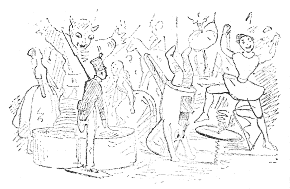

あるとき、二十五人すずの兵隊がありました。二十五人そろってきょうだいでした。なぜならみんなおなじ一本の古いすずのさじからうまれたからです。みんな銃剣をかついで、まっすぐにまえをにらめていました。みんな赤と青の、それはすばらしい軍服を着ていました。ねかされていた箱のふたがあいて、この兵隊たちが、はじめてこの世の中できいたことばは、
「やあ、すずの兵隊だ。」ということでした。このことばをいったのはちいちゃな男の子で、いいながら、よろこんで手をたたいていました。ちょうどこの子のお誕生日だったので、お祝にすずの兵隊をいただいたのでございます。
この子はさっそく兵隊をつくえの上にならべました。それはおたがい生きうつしににていましたが、なかで、ひとりが少しちがっていました。その兵隊は一本足でした。こしらえるときいちばんおしまいにまわったので、足一本だけすずがたりなくなっていました。でも、この兵隊は、ほかの二本足の兵隊同様、しっかりと、片足で立っていました。しかも、かわったお話がこの一本足の兵隊にあったのですよ。
兵隊のならんだつくえの上には、ほかにもたくさんおもちゃがのっていました、でもそのなかで、いちばん目をひいたのはボール紙でこしらえたきれいなお城でした。そのちいさなお窓からは、なかの広間がのぞけました。お城のまえには、二、三本木が立っていて、みずうみのつもりのちいさな鏡をとりまいていました。ろうざいくのはくちょうが、上でおよいでいて、そこに影をうつしていました。それはどれもみんなかわゆくできていましたが、でもそのなかで、いちばんかわいらしかったのは、ひらかれているお城の戸口のまんなかに立っているちいさいむすめでした。むすめはやはりボール紙を切りぬいたものでしたが、それこそすずしそうなモスリンのスカートをつけて、ちいさな細い青リボンを肩にゆいつけているのが、ちょうど肩掛のようにみえました。リボンのまんなかには、その子の顔ぜんたいぐらいあるぴかぴかの金ぱくがついていました。このちいさなむすめは両腕をまえへのばしていました。それは踊ッ子だからです。それから片足をずいぶん高く上げているので、すずの兵隊には、その足のさきがまるでみえないくらいでした。それで、この子もやはり片足ないのだろうとおもっていました。
「あの子はちょうどおれのおかみさんにいいな。」と、兵隊はおもいました。「でも、身分がよすぎるかな。あのむすめはお城に住んでいるのに、おれはたったひとつの箱のなかに、しかも二十五人いっしよにほうりこまれているのだ。これではとてもせまくて、あの子に来てもらっても、いるところがありはしない。でも、どうかして近づきにだけはなりたいものだ。」
そこで兵隊は、つくえの上にのっているかぎタバコ箱のうしろへ、ごろりとあおむけにひっくりかえりました。そうしてそこからみると、かわいらしいむすめのすがたがらくに見えました。むすめは相かわらずひっくりかえりもしずに、片足でつり合いをとっていました。
やがて晩になると、ほかのすずの兵隊は、のこらず箱のなかへ入れられて、このうちの人たちもみんなねにいきました。さあ、それからがおもちゃたちのあそび時間で、「訪問ごっこ」だの、「戦争ごっこ」だの、「
するうち、大時計が十二時を打ちました。
「ぱん。」いきなりかぎタバコ箱のふたがはね上がりました。
でもなかにはいっていたのは、かぎタバコではありません。それは黒い小鬼でした。そら、よくあるバネじかけのびっくり箱だったのです。
「おいすずの兵隊、すこし目をほかへやれよ。」と、その
でも一本足の兵隊はきこえないふうをしていました。
「よしあしたまで待ってろ」と、小鬼はいいました。
さて明くる朝になってこどもたちが起きてくると、一本足の兵隊は、窓のうえに立たされました。ところでそれは黒い小鬼のしわざであったか、風が吹きこんで来たためであったか、だしぬけに窓がばたんとあいて、一本足の兵隊は、三階からまっさかさまに下へおちました。どうもこれはひどいめにあうものです。兵隊は、片足をまっすぐに空にむけ、軍帽と銃剣を下にしたまま、
女中と男の子は、すぐとさがしにおりて来ました。けれども、つい足でふんづけるまでにしながらみつけることができませんでした。もし兵隊が大きな声で「ここですよう。」とどなったら、みつけたかも知れなかったのです。けれども兵隊は、軍服の手まえ、大きな声でよんだりなんかしてはみっともないとおもいました。
するうち雨が降りだしました。雨しずくがだんだん大きくなって、とうとうほんとうのどしゃ降りになりました。雨が上がったとき、ふたり町のこどもがでて来ました。
「おい、ごらんよ。すずの兵隊がいるよ。舟にのせてやろう。」と、そのひとりがいいました。そこでふたりは、新聞で紙のお舟をつくりました。そしてすずの兵隊をのせました。兵隊は新聞のお舟にのったまま、みぞのなかをながされていきました。ふたりのこどもはいっしょについてかけながら手をたたきました。やあ、たいへん。みぞのなかはなんてえらい波が立つのでしょう、流の早いといったらありません。なにしろ大雨のあとでした。紙の小舟は、上下にゆられて、ときどきくるくるはげしくまわりますと、すずの兵隊はさすがにふるえました。でも、やはりしっかりと立って、
いきなりお舟は、長い
「いったい、おれはどこへいくのだ。」と、兵隊はおもいました。「そうだ、そうだ。これは
こうおもっているところへ、ふと
「おい、
でも、すずの兵隊は、だんまりで、よけいしっかりと銃剣をかついでいました。お舟はずんずん流れていきました。ねすみはあとから追いかけて来ました。
うッふ、ねずみはきいきい歯ぎしりして、わらくずや木切れに、どんなによびかけたことでしょう。「あいつをおさえろ。あいつをおさえろ。あいつは通行
でも、流れはだんだんはげしくなりました。やがて橋がおしまいになると、すずの兵隊は、日の目を見ることができました。でもそれといっしょにごうッという音がきこえました。それはだいたんな人でもびっくりするところです。どうでしょう、ちょうど橋がおしまいになったところへ、
でももうとまろうにもとまれないほど近くまで来ていました。舟は、兵隊をのせたまま、押し流されました。すずの兵隊は、でも一生けんめいつッぱりかえっていて、それこそまぶたひとつ動かしたとはいえません。お舟は三四ど、くるくるとまわって、舟べりまでいっぱい水がはいりました。もう沈むほかはありません。すずの兵隊は首まで水につかっていました。お舟はだんだん深く深く沈んでいって、新聞紙はいよいよぐすぐすにくずれて来ました。もう水は兵隊のあたまをこしてしまいました。そのとき兵隊は、かわいらしい踊ッ子のことをおもいだして、もう二どとあうこともできないとかんがえていました。すると兵隊の耳にこういう歌がきこえました。――
さよなら、さよなら、兵隊さん、
これでおまえもおしまいだ。
これでおまえもおしまいだ。
ちょうどそのとき新聞紙がやぶれて、すずの兵隊は水のなかへ落ち込みました。――ところが、そのとたん、大きなおさかなが来て、ぱっくりのんでしまいました。
まあ、そのおさかなのおなかのなかの暗いこと。そこは下水の橋下よりももっとまっ暗でした。それになかのせま苦しいといったらありません。でもすずの兵隊はしっかりと立って、銑剣肩につッぱりかえっていました。
おさかなはあっちこっちとおよぎまわりました。それはさんざん、めちゃくちゃに動きまわったあと、きゅうにしずかになりました。ふと、
「やあ、すずの兵隊が。」といいました。
おさかなは、つかまえられて、魚市場へ売られて、買われて、台所へはこばれて、料理番の女中が大きなほうちょうで、おなかをさいたのです。女中は、そのとき兵隊を両手でつかんでおへやへ持っていきますと、みんなは、おさかなのおなかのなかの旅をして来ためずらしい勇士をみたがってさわいでいました。でもすずの兵隊はちっともとくいらしくはありませんでした。みんなは兵隊をつくえの上にのせました。すると――どうでしょう、世の中にはずいぶんな奇妙なことがあるものですね。すずの兵隊は、もといたそのへやへまたつれてこられたのです。兵隊はやはりせんの男の子にあいました。おなじおもちゃがそのうえにのっていました。かわいい踊ッ子のいるきれいなお城もありました。むすめはやはり片足でからだをささえて、片足を空にむけていました。この子もやはりしっかり者のなかまなのでした。これがすっかりすずの兵隊のこころをうごかしました。で、もう少しですずの涙をながすところでした。でも、そんなことは男のすることではありません。兵隊はむすめをじっとみました。むすめも兵隊の顔をみました。けれどおたがいになんにもものはいいませんでした。
そのとき、ちいさい男の子のひとりが、すずの兵隊をつかんで、いきなりだんろのなかへなげこみました。どうしてこんなことになったのか、きっとかぎタバコの黒い
すずの兵隊はあかあかと光につつまれながら立っていました。そのうち、ひどいあつさをかんじて来ました。でもこのあつさはほんとうの火であついのか、心臓のなかの血がもえるのであついのか、わかりませんでした。やがてからだの色はすっかりはげてしまいました。でも、これも長旅のあいだでとれたのか、心のかなしみのためにはげたのか、それもわかりません。兵隊は踊ッ子の顔をみました。むすめも兵隊を見返しました。そのうちからたがとろけていくようにおもいました。でも、やはり銃剣肩に、しっかり立っていました。そのとき出しぬけに戸がばたんとあいて。吹きこんだ風が踊ッ子をさらいますと、それはまるで空をとぶ
するうち、すずの兵隊は、だんだんとろけて、ちいさなかたまりになりました。
そうして、あくる日女中が、灰をかきだしますと、兵隊はちいさなすず［＃「すず」は底本では「ずず」］のハート形になっていました。けれども踊ッ子のほうは、金ぱくだけがのこって、それは炭のようにまっくろにこげていました。